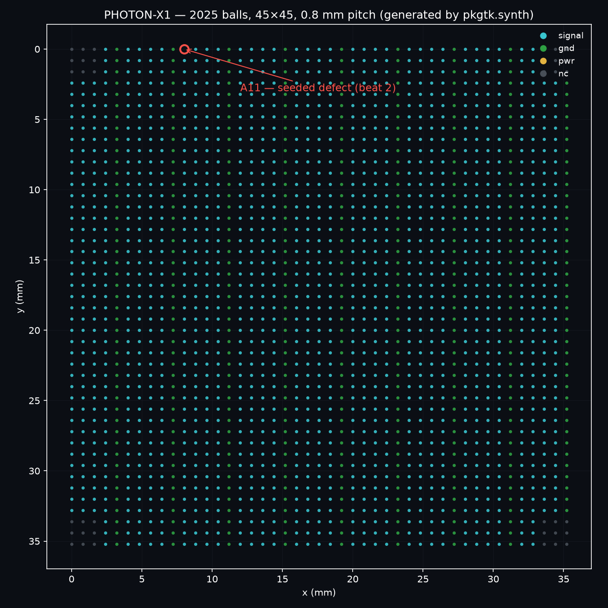
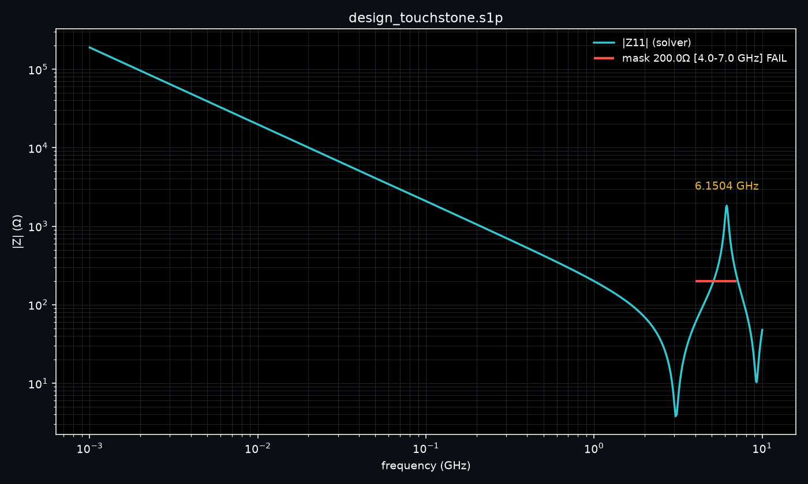
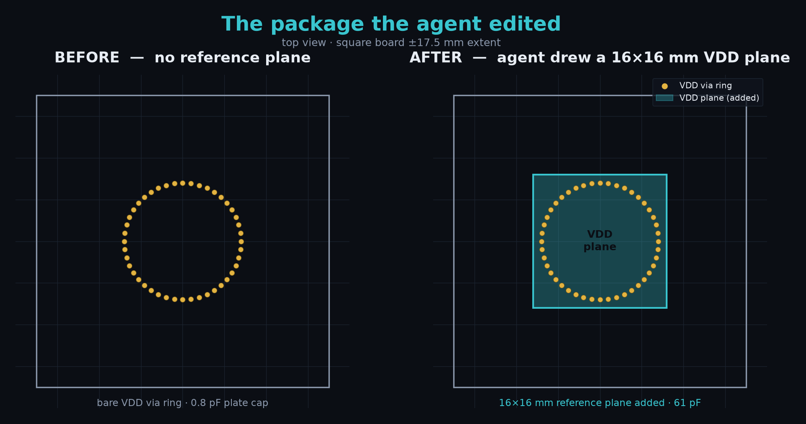
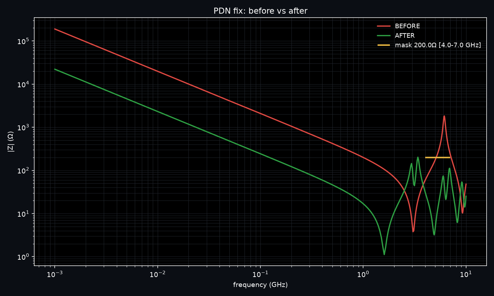
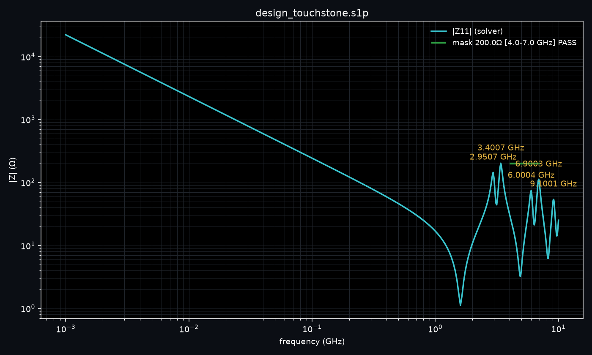
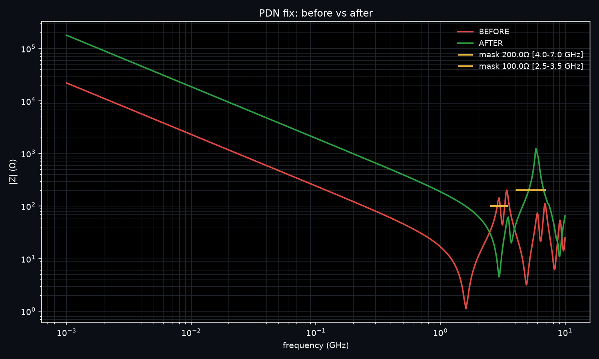
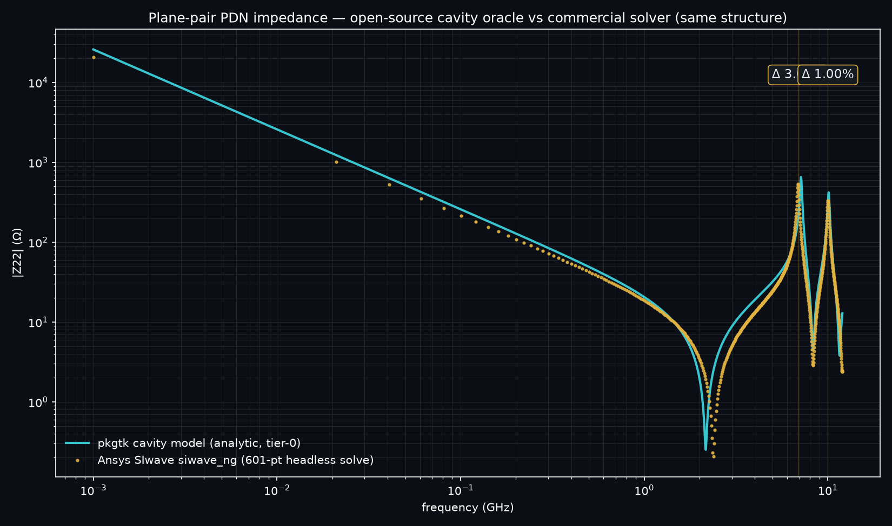
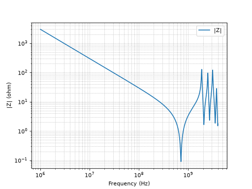

Package-design verification — closed-loop, by an AI agent.
Every number on the plots that follow is solver-verified and reproducible.

Synthetic 2025-ball package, generated from a seed — zero proprietary data. Ball-map connectivity is verified by pkgtk's deterministic check engine.

Ansys SIwave solve of the power network: 1824 Ω @ 6.15 GHz against the ≤200 Ω mask across 4–7 GHz. A plate capacitance under 1 pF says the design has no working reference planes at all.

Bare via ring → reference planes, computed then drawn by the agent in the Cadence database (APD 24.1, headless SKILL). Every edit is independently verified in a fresh session before it is trusted.

BEFORE 1824.4 Ω @ 6.15 GHz → AFTER 74.1 Ω @ 6.00 GHz — mask PASS. Plane capacitance 61.0 pF measured; the agent predicted it in writing, before solving (51 pF + fringing; requirement ≥30 pF).

The re-solved curve under the mask, 4–7 GHz clean. Referee verdict: fixed: true — proven three times, clean-room, bit-identical.

Handed a second, conflicting requirement, the agent's candidate fixes each trade one spec away (~1245 Ω regressed in the old band). The independent referee refuses all three — nothing ships, the conflict is reported with evidence.

pkgtk's open-source cavity oracle (cyan) against Ansys SIwave (amber): resonance peaks agree within 3.68% and 1.00%. Solver output passes the physics gate — passivity σmax 0.999973, reciprocity exact.

The same physics, computed by the open toolkit itself — every check deterministic, exit-code contracted, agent-operable (pkgtk pdn --png).
Cadence Allegro APD 24.1 · Ansys SIwave 2026 R1 · pyedb · KLayout
github.com/ashtygn/packagent